Production RAG
Daluobo RAG Support
Knowledge-base support with tenant isolation, cited streaming answers, fallback, and human handoff.
Full-stack product developer · China · remote
AI applications, multilingual products, learning platforms, and complex client systems. I use Codex to accelerate implementation, while keeping architecture, business rules, review, testing, and release accountable to a human.
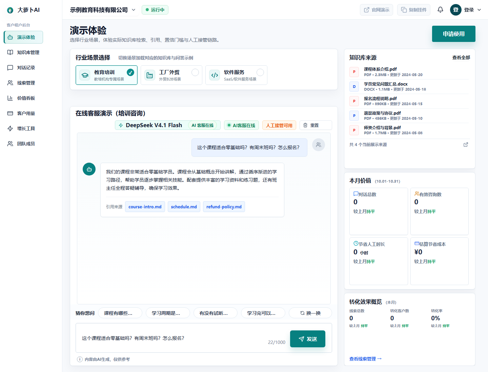
Open the actual products
Every featured entry opens a running product or a concrete product preview. Images are real screenshots from the deployed UI.
Production RAG
Knowledge-base support with tenant isolation, cited streaming answers, fallback, and human handoff.
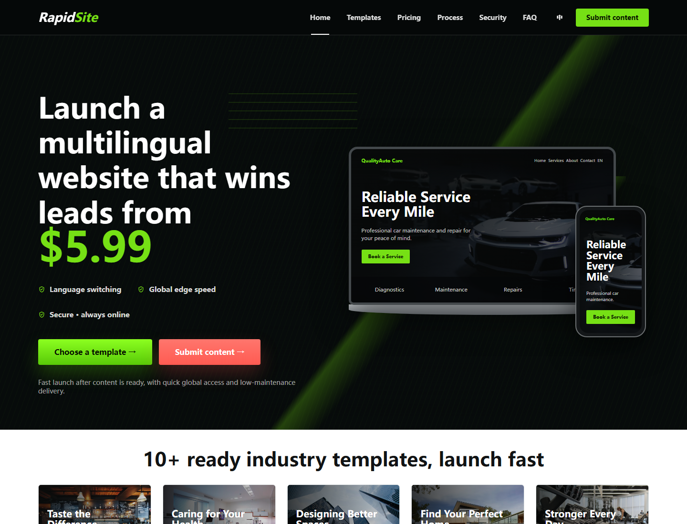
Multilingual website product
A production website-delivery product with reusable industry templates, content intake, and Cloudflare deployment.
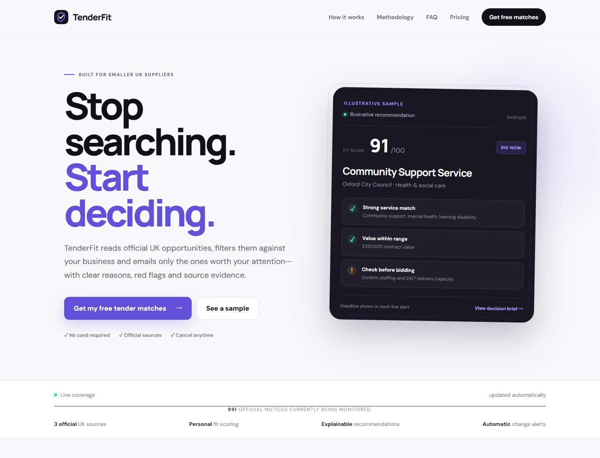
Tender discovery
An explainable tender-discovery product for smaller UK suppliers, with free preview and email-first alerts.
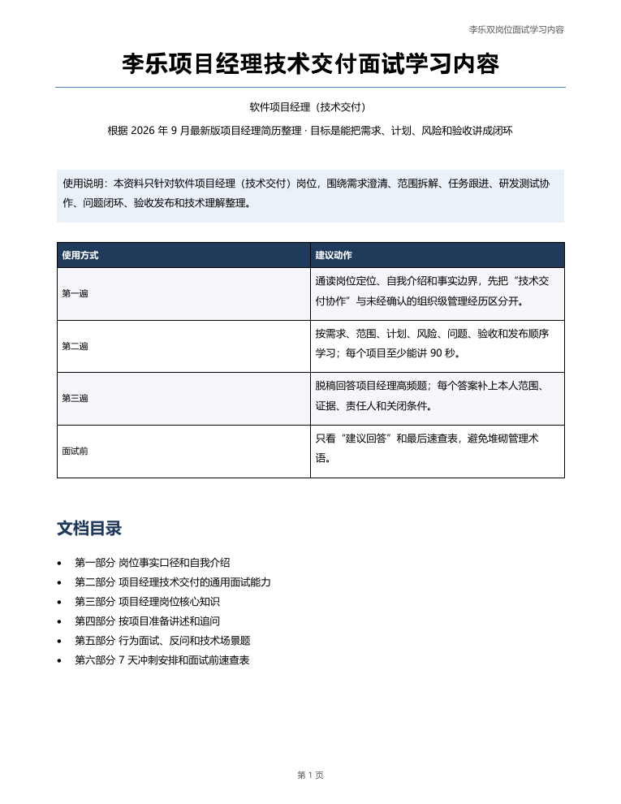
Learning product
A 12-week product-management learning platform with lessons, templates, exercises, interviews, and progress tracking.
Sanitized client delivery
Client code, branding, private screenshots, and customer data stay private. The selected screenshots below show only the project UI without exposing customer records.
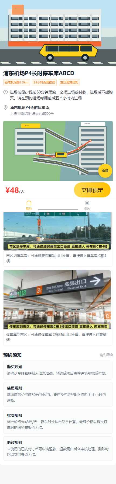
05Customer web, mini program, API, and admin workflows for date inventory, pricing, orders, payments, and refunds.
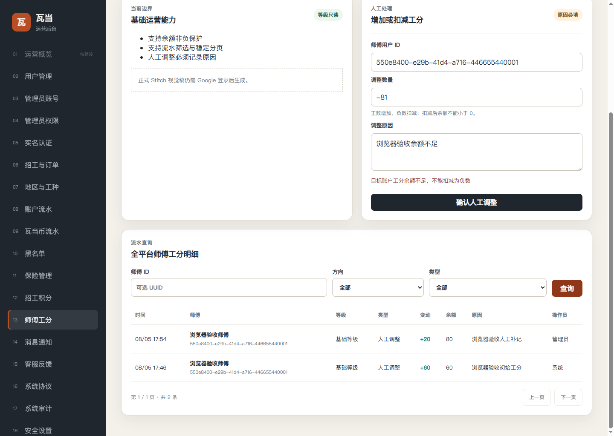
06Registration, review, points, notifications, and permissions across a mini program, NestJS APIs, and Vue admin.
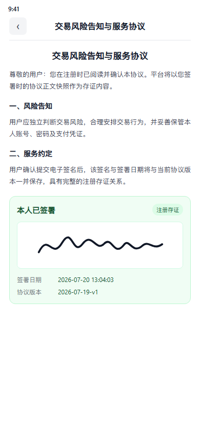
07Targeted improvements to entitlements, inventory, orders, session access, and signed agreement records.
The full archive
25 selected builds, ordered by product maturity. Projects without a usable public screenshot are listed without an image rather than illustrated with a mockup.
Knowledge-base support with tenant isolation, cited streaming answers, fallback, and human handoff.
A production website-delivery product with reusable industry templates, content intake, and Cloudflare deployment.
An explainable tender-discovery product for smaller UK suppliers, with free preview and email-first alerts.
A 12-week product-management learning platform with lessons, templates, exercises, interviews, and progress tracking.
Customer web, mini program, API, and admin workflows for date inventory, pricing, orders, payments, and refunds.
Registration, review, points, notifications, and permissions across a mini program, NestJS APIs, and Vue admin.
Targeted improvements to entitlements, inventory, orders, session access, and signed agreement records.
Product search, homepage configuration, admin maintenance, and data checks across mini-program, Java, and Vue clients.
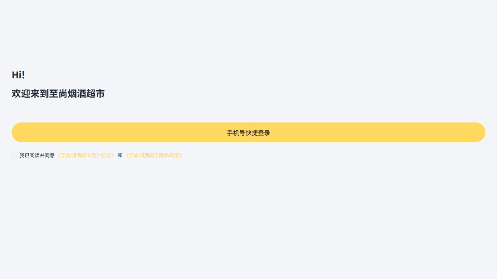
Customer, distribution, order, product, membership, content, and back-office flows for a durian brand platform.
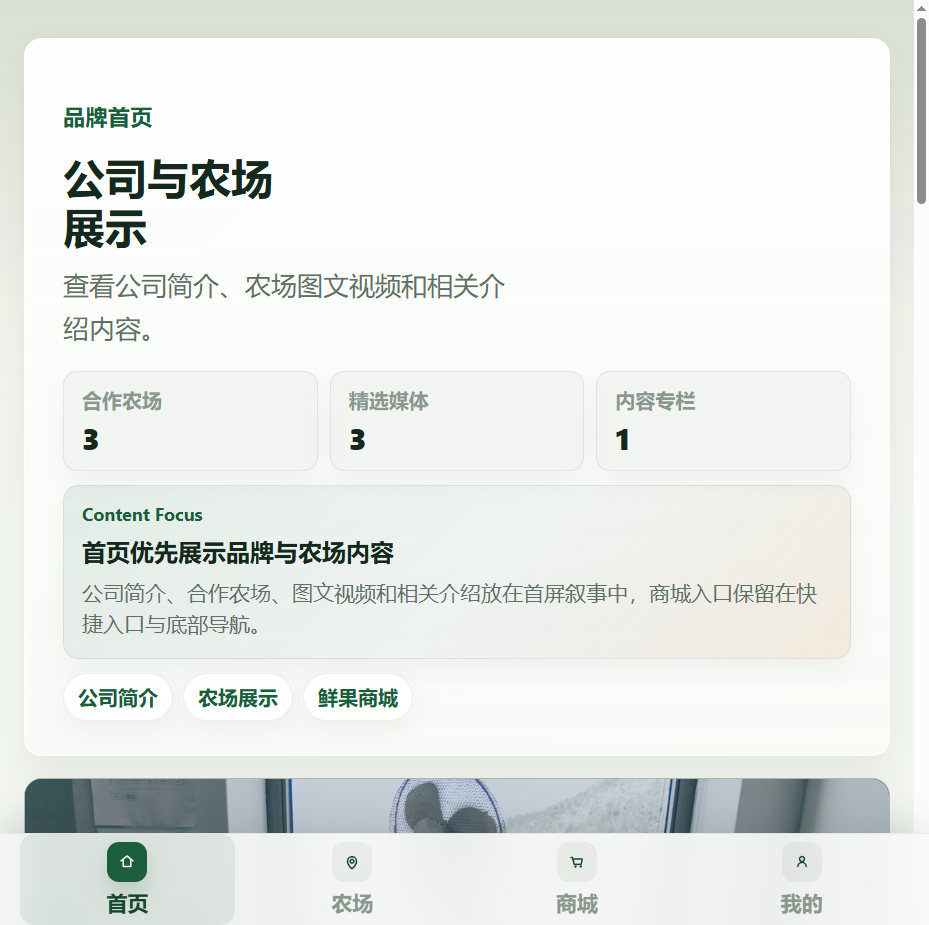
Order, refund, finance, companion-review, and operational risk workflows with automated acceptance checks.
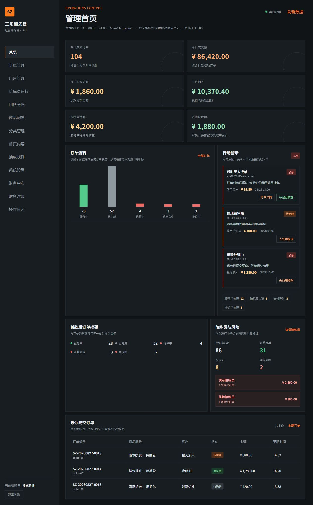
A multilingual digital-product storefront with card-key delivery, email notifications, and order lookup.
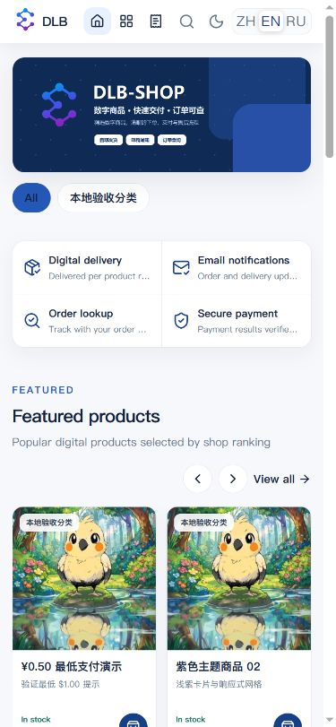
An OpenAI-compatible API gateway that exposes multiple AI models behind one endpoint.
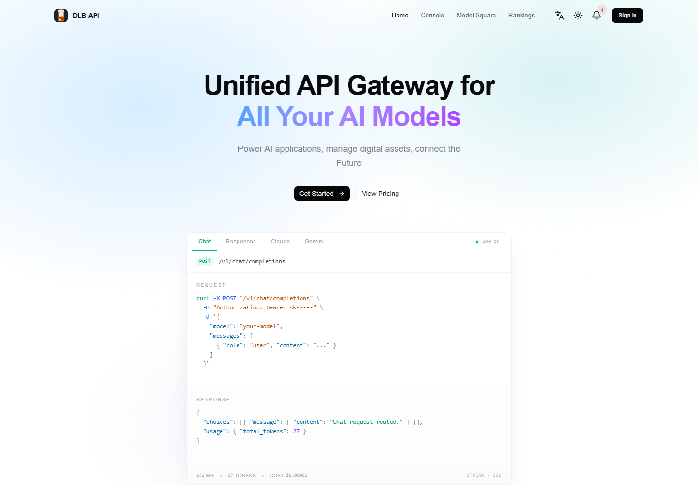
AI-native UI design, prototyping, code export, and publishing workspace with project history and quotas.
Text and image generation, asset storage, async jobs, idempotent claims, retries, and failure states.
A browser-based release verification workflow with evidence capture, URL policy, and GitHub webhook boundaries.
A job-search workflow prototype built around deterministic matching, explicit approvals, and idempotent actions.
A mobile-first remote gateway for Codex and AI coding agents.
A customized resale-operations toolkit for listing, fulfillment, reviews, and AI-assisted workflows.
A Playwright and AI monitoring workflow for multi-task marketplace discovery and analysis.
A multi-market data and LLM analysis system with dashboards, news, and scheduled notifications.
A local-first WeChat intelligence workflow with CLI search, daily briefings, and opportunity tracking.
A visual toolkit for text-only coding agents: image Q&A, long-screenshot OCR, UI restoration, and GUI automation references.
A clean-room Spring Boot lab for idempotency, concurrency, transaction boundaries, and state consistency.
A Windows system-audio visualizer with real-time neon energy bars.
A desktop utility for academic-resource access support and subscription management.
The delivery contract
Acceptance criteria, roles, data, edge cases, and a first milestone that can be demonstrated.
Trace the existing pages, APIs, schemas, call chains, and deployment constraints before changing code.
Use Codex for navigation, repetitive edits, implementation drafts, and test scaffolding — one verifiable slice at a time.
Check authorization, money, inventory, state, and failure paths; verify with tests, logs, SQL, deployment, and a working demo.
About
I am Le Li, a full-stack developer with approximately five years of experience across Java, TypeScript, Web, and mini-program delivery. My strongest work sits where product behavior meets engineering constraints: permissions, state transitions, amounts, inventory, migration, failure recovery, and release verification.
I work remotely with clear written requirements, short feedback loops, working demos, and handoff notes that let the next developer continue without reverse-engineering the project.
Working stack